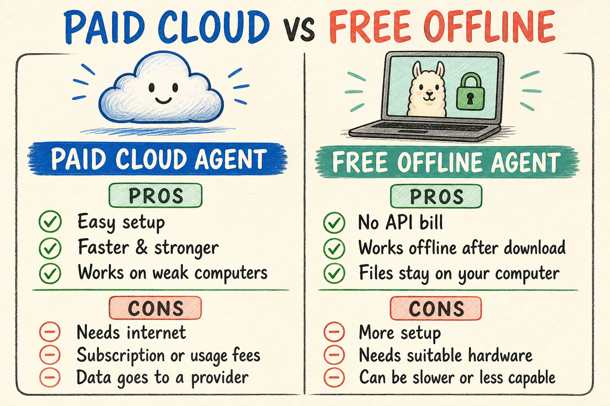

Explore by genre
Guides, experiments and build logs. Everything here is free.

چشم را بساز: ایجنت معاملاتی با حق وتوی فیزیکی
راهنمای ۱۶ فصلی صفر تا اجرا: تلگرام، Gateway، ابزارهای MoonPay، داشبورد زنده و امضای فیزیکی Ledger.
Open guide →
Your first cloud agent task
Give an AI agent one practical, carefully bounded task: organize a messy Desktop.
Read PDF →اولین وظیفه واقعی برای یک ایجنت ابری
یک تجربه ساده و کنترلشده برای مرتبکردن دسکتاپ؛ مناسب کسی که برای اولین بار ایجنت را امتحان میکند.
باز کردن PDF ←
همان وظیفه، اینبار آفلاین روی کامپیوتر خودت
Ollama، مدل Llama، OpenCode، سختافزار و Context Window را ساده یاد بگیرید و تفاوت Cloud و Offline را تجربه کنید.
باز کردن PDF ←
Cloud yesterday. Your computer today.
Run the same agent task twice to feel the real difference in setup, privacy, speed and cost.
Open on X →No guide in this genre yet. More experiments are coming.